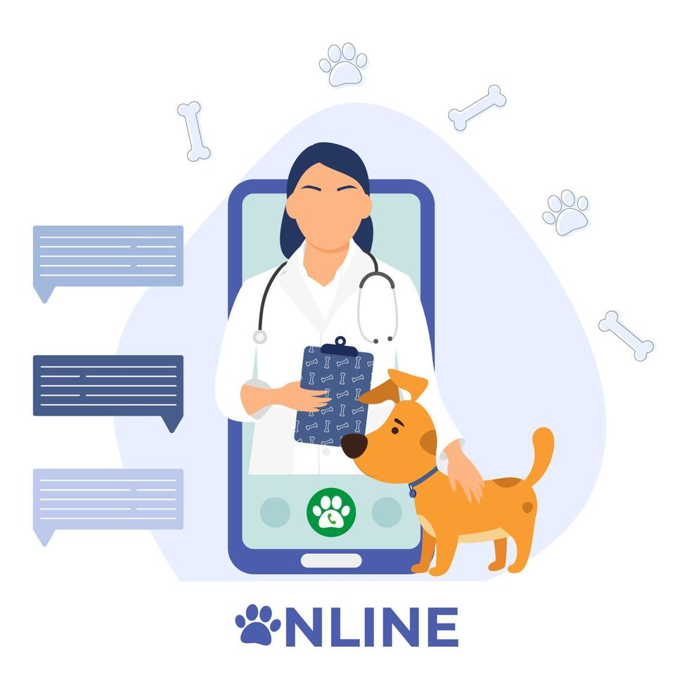

Nuestros Servicios
Ten todo lo que tu amigo necesita en un solo lugar
Consultas Veterinarias
Nuestro equipo de veterinarios expertos está aquí para ofrecerte asesoramiento y orientación cuando más lo necesites.
Consultas Veterinarias
Nuestro equipo de veterinarios expertos está aquí para ofrecerte asesoramiento y orientación cuando más lo necesites.
Con nuestras consultas veterinarias presenciales y online, puedes obtener respuestas a tus preguntas sobre la salud y el bienestar de tu mascota desde la comodidad de tu hogar.
Con nuestras consultas veterinarias presenciales y online, puedes obtener respuestas a tus preguntas sobre la salud y el bienestar de tu mascota desde la comodidad de tu hogar.
Servicios Adicionales
Además de nuestra entrega de comida premium y consultas veterinarias virtuales, ofrecemos una variedad de servicios adicionales para satisfacer todas las necesidades de tu mascota. Desde cuidado de peluquería hasta entrenamiento personalizado, estamos aquí para ayudarte a brindarle a tu mascota la mejor atención posible.